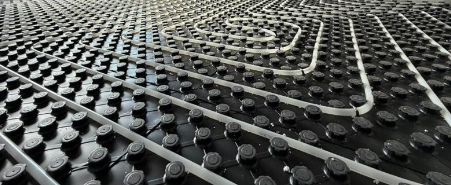
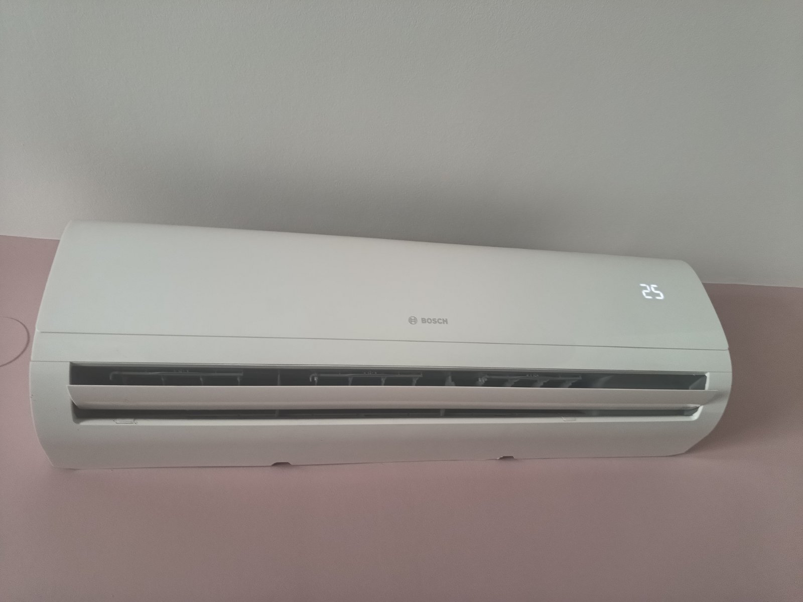
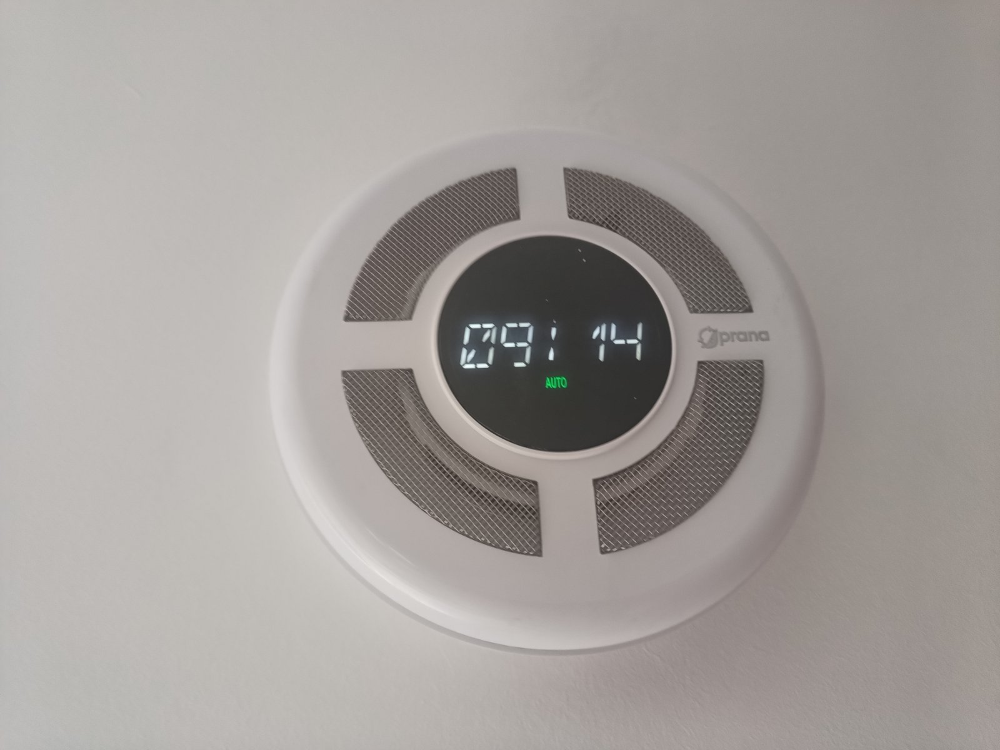
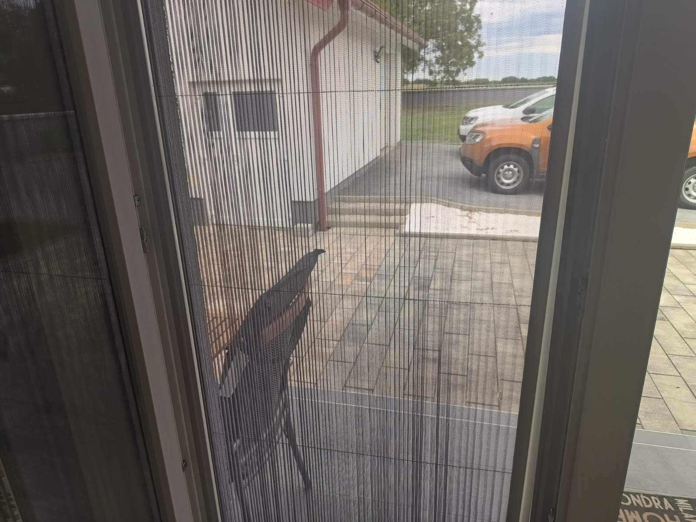
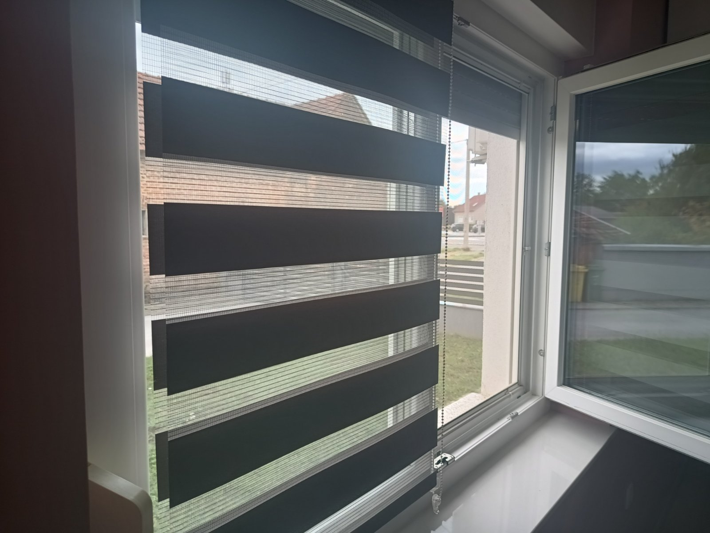
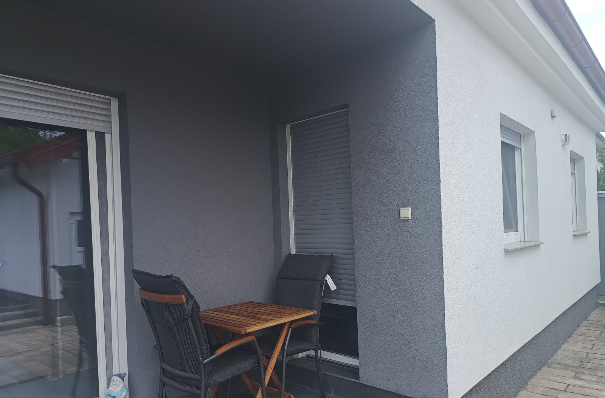
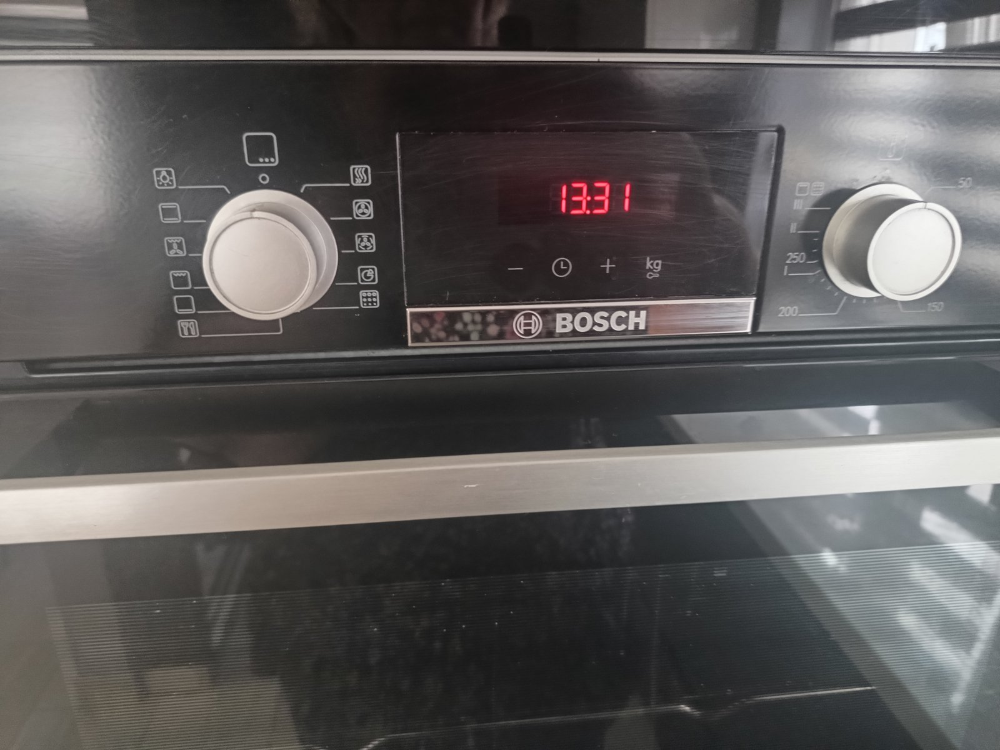

Grijanje i oprema
Udobnost, kvaliteta i praktičnost tijekom cijele godine
♨ Podno grijanje
Podno grijanje na plin izvedeno je po cijelom tlocrtu kuće, s regulatorima temperature u svakoj prostoriji, čime se osigurava ravnomjerna i ugodna toplina u cijelom domu.

❄ Klimatizacija
Kuća je opremljena s dvije inverterske Bosch klime prilagođene veličini i rasporedu prostora.

↻ Pametna rekuperacija
Sustav rekuperacije omogućuje kontinuiranu izmjenu zraka i doprinosi ugodnijoj mikroklimi u prostoru.

▣ Stolarija
Kvalitetna TROHA-DIL stolarija s troslojnim staklom, roletama i komarnicima.


⌂ Izolacija
Kuća je kvalitetno izolirana, a termo fasada izvedena je s 15 cm grafitnog stiropora, što pridonosi smanjenju toplinskih gubitaka i boljoj energetskoj učinkovitosti.

✓ Oprema
Kuća se prodaje potpuno namještena i opremljena, uključujući Bosch uređaje – spremna za useljenje.
